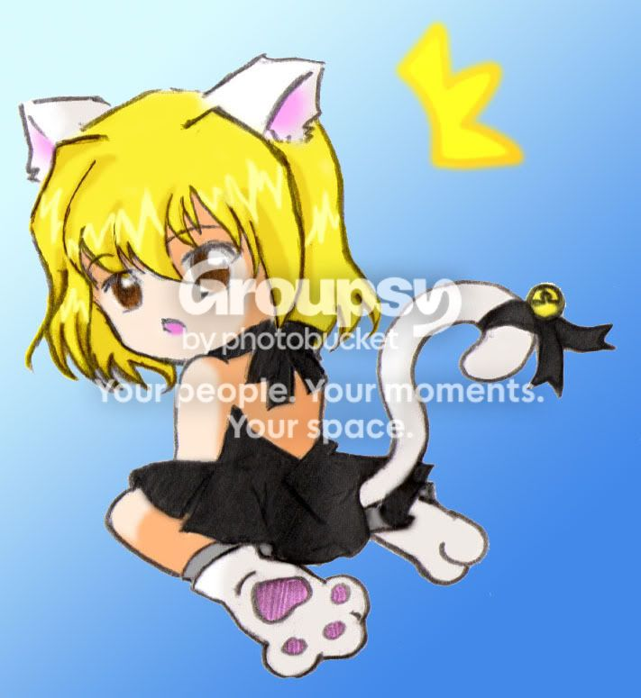

หน้า 64 จากทั้งหมด 143

โพสต์แล้ว:
พฤหัสฯ. 31 พ.ค. 2007 10:16 pmโดย ECO
ใกล้ได้เวลาเว็บบอร์ดนี้แล้วแฮะ ดูท่าทางระบบเกมจะอิงตามระบบเกาหลี
เคยบอกไว้แล้วว่า ถ้าเป็นแบบเกาหลี เลิกเล่นแน่ๆ(พูดแล้วไม่คืนคำ) ยังไงๆ ถ้าจะเลิกเมื่อไหร่จะขอวาดรูป อำลาส่งท้าย กระทู้ Fan Arts มันซะเลย
เตรียมแพ็คของย้ายบอร์ด เฮอออ.... เซ็งแฮะเกมยุ่นมาตรฐานเกาหลี
โพสต์แล้ว:
พฤหัสฯ. 31 พ.ค. 2007 11:08 pmโดย ECO
เง้อ เมษจะไปละหรอ(ถ้าเกาหลีจิง)- -
โพสต์แล้ว:
ศุกร์ 01 มิ.ย. 2007 9:04 amโดย ECO
ไปจริงๆอ่ะครับ รอก็นาน ยังจะมาเจอแบบนี้อีก เสียความรู้สึกมากๆ
โฆษณาซะยิ่งใหญ่ ว่าเกมญี่ปุ่น แต่ดันเอามาแก้โน่นแก้นี่จนจะไม่เรียกว่าเป็นเกมญี่ปุ่นแล้ว
เรียกเกมเกาหลีดีกว่ามั๊ง อีกอย่างเคยพูดไว้แล้วว่าจะเลิก ถ้าเป็นเกาหลี ไม่อยากกลับคำพูดครับ ทำแบบนั้นแล้ว
คงทุเรศตัวเองชอบกล :?
โพสต์แล้ว:
ศุกร์ 01 มิ.ย. 2007 9:15 amโดย ECO
อย่าเพิ่งปาย~~~~~~~~~
-/\-ขออย่าให้เป็นแบบเกาเหลาเลย
โพสต์แล้ว:
ศุกร์ 01 มิ.ย. 2007 9:36 amโดย ECO
เหลือเวลาอีก 21 วันก็จะได้รู้ซะทีว่าจะอยู่หรือจะไป
เดี๋ยวขอตัวไปวาดรูปตัวละครในการ์ตูนที่ตัวเองกำลังคิดต่อละ
กะเอาโปรแกรมคอม โปรแกรมป้องกันไวรัสกับไวรัส มาแต่งเล่น (จะโดนฟ้องมั้ยเนี้ย ขำๆ)
Hard Disk - แก้เป็น Hardis ใช้เป็นชื่อโลกในเรื่อง
NoD32 - แก้เป็น NoD Republic ใช้เป็นชื่อสาธารณรัฐที่มีเทคโนโลยีทันสมัยที่สุด
Microsoft - แก้เป็น Micronian Empire ใช้เป็นชื่อจักรวรรดิที่พยายามขยายอิทธิพลทั่ว Hardis World
Bit Defender - แก้เป็น Best Intelligent and Tactic Organization (Bit-Organize) ชื่อองค์กรทหารรับจ้างที่มีชื่อเสียง Defender ใช้เรียกทหารในองค์กร
อืมมคิดไว้อีกเยอะเลยแฮะ แต่ไม่เก่งเรื่องเขียนนิยาย ถนัดแต่วาดรูปจริงๆแฮะ
โพสต์แล้ว:
ศุกร์ 01 มิ.ย. 2007 10:26 amโดย ECO
Ariesnoah เขียน:เหลือเวลาอีก 21 วันก็จะได้รู้ซะทีว่าจะอยู่เหลือจะไป
เดี๋ยวขอตัวไปวาดรูปตัวละครในการ์ตูนที่ตัวเองกำลังคิดต่อละ
กะเอาโปรแกรมคอม โปรแกรมป้องกันไวรัสกับไวรัส มาแต่งเล่น (จะโดนฟ้องมั้ยเนี้ย ขำๆ)
Hard Disk - แก้เป็น Hardis ใช้เป็นชื่อโลกในเรื่อง
NoD32 - แก้เป็น NoD Republic ใช้เป็นชื่อสาธารณรัฐที่มีเทคโนโลยีทันสมัยที่สุด
Microsoft - แก้เป็น Micronian Empire ใช้เป็นชื่อจักรวรรดิที่พยายามขยายอิทธิพลทั่ว Hardis World
Bit Defender - แก้เป็น Best Intelligent and Tactic Organization (Bit-Organize) ชื่อองค์กรทหารรับจ้างที่มีชื่อเสียง Defender ใช้เรียกทหารในองค์กร
อืมมคิดไว้อีกเยอะเลยแฮะ แต่ไม่เก่งเรื่องเขียนนิยาย ถนัดแต่วาดรูปจริงๆแฮะ
คือว่า ><"....
โพสต์แล้ว:
ศุกร์ 01 มิ.ย. 2007 10:27 amโดย ECO
แง้วๆๆ ยังไม่เอารูปมาอีกตามเคย 555+T_T" อนาถใจกะเครื่องที่บ้าน
แล้วAriesnoahจะไปไหนนนนนนนนนนนน (ถ้าระบบเกมเปนแบบเกาหลีน่ะ

hock: )
โพสต์แล้ว:
ศุกร์ 01 มิ.ย. 2007 10:48 amโดย ECO


รูปแรกรูปผม รูปที่สองรูปพี่ยามาโมจกับพี่เครอน
พี่เครอนน่าจะเห็นใจพี่ยามาโมจบ้างน้า เพิ่งกลับจากอาโอโมริ
อันที่จริงพี่ยามาโมจไม่ได้เต้นหรอกนะแต่แค่เต้นเก่งอ่าครับ คราวนี้พี่เครอนแสดงเลยจะให้พี่ยามาโมจไปเต้นด้วย ><"
โพสต์แล้ว:
ศุกร์ 01 มิ.ย. 2007 11:19 amโดย ECO
[alisa]_FF เขียน:แง้วๆๆ ยังไม่เอารูปมาอีกตามเคย 555+T_T" อนาถใจกะเครื่องที่บ้าน
แล้วAriesnoahจะไปไหนนนนนนนนนนนน (ถ้าระบบเกมเปนแบบเกาหลีน่ะ
hock: )
ว่าจะไปวางรากฐานอยู่ Project ONE แทน (ถ้าเป็นเกาหลี)
โพสต์แล้ว:
ศุกร์ 01 มิ.ย. 2007 11:20 amโดย ECO
Ariesnoah เขียน:[alisa]_FF เขียน:แง้วๆๆ ยังไม่เอารูปมาอีกตามเคย 555+T_T" อนาถใจกะเครื่องที่บ้าน
แล้วAriesnoahจะไปไหนนนนนนนนนนนน (ถ้าระบบเกมเปนแบบเกาหลีน่ะ
hock: )
ว่าจะไปวางรากฐานอยู่ Project ONE แทน (ถ้าเป็นเกาหลี)
(_ _")มันคือ?...
โพสต์แล้ว:
ศุกร์ 01 มิ.ย. 2007 11:21 amโดย ECO
แปะๆๆ

เหมี้ยว~*
โพสต์แล้ว:
ศุกร์ 01 มิ.ย. 2007 11:23 amโดย ECO
เกมออนไลน์ฝีมือคนไทยครับ Project "Online Never Ending"
ลังเลอยู่ว่าจะย้ายเลย หรือว่าจะรอดูวันที่ 22 อยู่เหมือนกัน
โพสต์แล้ว:
ศุกร์ 01 มิ.ย. 2007 11:26 amโดย ECO
ขอดูเว็บเกมหน่อยจิ้ ><
จะดูหน้าตาเกม อิอิ
โพสต์แล้ว:
ศุกร์ 01 มิ.ย. 2007 11:33 amโดย ECO
http://www.gameindy.com/?action=cms_web_home
อย่าคาดหวังว่าจะเป็น 3D สวยๆแบบ ECO หรือ 2D สวยๆแบบ RO
แต่อยากให้มองว่าเป็นเกมคนไทยทำเอง ทีมงานที่ทำก็มาจากเกมเมอร์แบบเรานี่แหละ
เพราะงั้นคิดว่าทีมงานน่าจะเข้าใจความต้องการของผู้เล่นดีกว่า บริษัทเกมใหญ่ๆ ที่มีผู้บริหาร ไม่รู้เรื่องเกม (ชอบจริงๆเลย ไปดูเว็บมา เห็นมีให้สมัครเป็น GM อาสาสมัคร ด้วย) ทีมงานเขามีกิจกรรมให้ผู้เล่นมีส่วนร่วมพัฒนาเกม ตั้งแต่ชื่อไอเท็ม ชื่อมอน ฯลฯ
ที่สำคัญแม้เก็บแอร์ไทม์ แต่ถูกมากๆ จ่ายแปดร้อยกว่า เล่นเป็นปี
ปล. ไม่อยากเล่นสลับไปสลับมา เลยต้องเลือกอย่างใดอย่างหนึ่ง ถ้า ECO ไม่ผ่าน ก็ย้ายไปเล่นเกมนี้แน่ๆละ อย่างน้อยก็เกมคนไทย
โพสต์แล้ว:
ศุกร์ 01 มิ.ย. 2007 12:10 pmโดย ECO
*-*รูปแบบน่าสนใจดีนะครับเนี่ย*-*